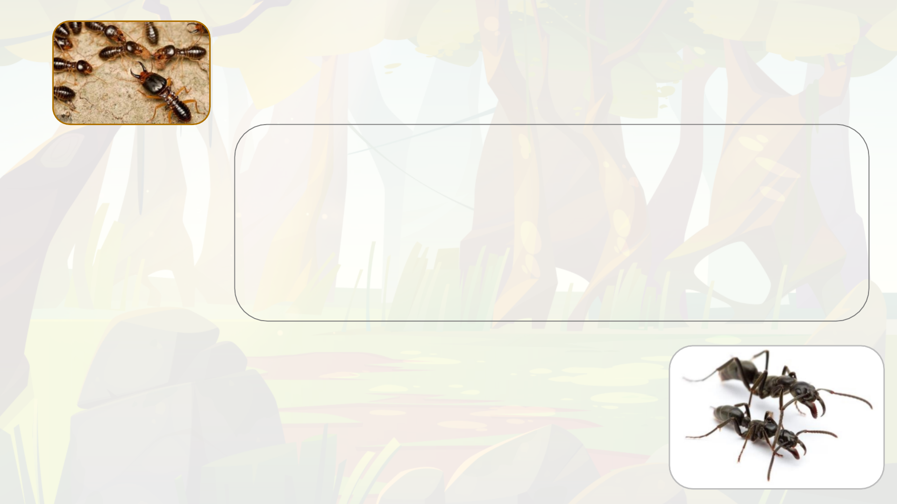
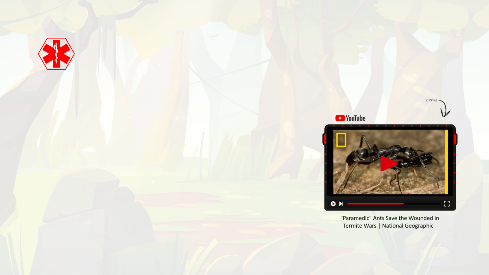
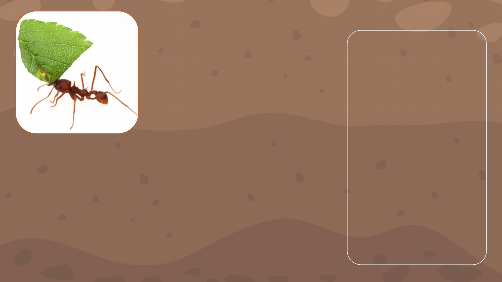

Mravenci x Termiti
mravenec argentinský (Linepithema humile); mravenec metable (Megaponera analis)
kmen členovci; podkmen vzdušnicovci, třída hmyz; řád blanokřídlí, rod mravenci (Formica)
x
termit anoplothermes (Anoplothermesbanksi)
kmen členovci; podkmen vzdušnicovci, třída hmyz; řád všekazi; podřád termiti

Mravenci x Termiti
Hlavní mravenčí útok
Průzkumníci identifikují přibližnou lokaci termitiště pomocí termitích feromonů, poté se vrací do mraveniště pro posily k toku.
Do útoku se zapojují jak vojáci, tak dělníci. Vojáci vedou skupinu k ermitišti pomocí feromonů.
„Armáda“ začíná hlavní útok, větší vojáci svými kusadly vytváří otvor v ermitišti, menší dělnici lezou dovnitř a útočí na komory s
larvami.
Po zpozorování mravenčího útoku začnou termití vojáci narážet hlavou do země, což slouží jako varovný signál. Zároveň
začnou produkovat feromony, kterými varují vojáky i z iných částí termitiště.
Termití vojáci jsou větší a mají větší kusadla, nicméně mravenci mají výhodu překvapivého útoku, protože se prokousali nový
vstup. Zároveň mravenci na rozdíl od termitů vykazují chování společenského boje kdy jeden druhému „kryjí záda“ a jako
skupina tedy prioritizují boj s těmi termity, kteří zrovna aktivně útočí na nějakého mravence. Toto chování termiti ve většině
případů nevykazují a jsou tak v boji méně efektivní.
Dělníci pronikají relativně hluboko do termitiště, kde loupí termití vajíčka a nymfy. Termití vojáci jsou nuceni rozdělovat své síly
kvůli útokům na vstupy od mravenčích průzkumníků a tak nikdy nezaútočí plným počtem na místo, kde skutečně dochází k
hlavnímu útoku.
Po konci bitvy nastupují „zdravotníci“, mravenci tedy odnášejí i své raněné.

Mravenci x Termiti
-Zdravotníci
Zdravotníci
Mravenci nemají žádné vyčleněné zdravotníky. Po konci bitvy
začnou zranění mravenci vypouštět feromon, díky němuž je najdou
ostatní. Většinou raněné odnášejí spíše větší vojáci, nicméně i menší
dělníci se často zapojují.
Když mravenec není příliš zraněný, což znamená, že má více než
dvě nohy a spolupracuje při „nakládání“, mravenci ho odnesou zpět
do mraveniště.
Pokud je rána infikována ošetřují ji slinami, které obsahují 112
sloučenin z čehož polovina má antibakteriální nebo hojivé účinky,
význam zbylé poloviny zůstává neznámý V xperimentech izolovali
zraněné vojáky tedy se jim nedostalo léčby a 90 % z ich zemřelo,
s šetřením je to 22 %.

Mravenci x Termiti
-úvod
Mravenci jsou hlavními predátory termitů, jsou to mrchožrouti a predátoři.
Především mravenčí larvy potřebují stravu bohatou na bílkoviny.
Je to velmi starý vztah, mravenci lovící termity byli nalezeni i v antaru starém
130 milionů let.
Tento vztah predátor – kořist se vyskytuje pouze tam, kde se vyskytují
mravenci a termiti zároveň, tedy hlavně v ropických oblastech Afriky,
Austrálie a Jižní Ameriky.
Vzhledem k ozšiřování termitů jako invazního druhu v vropě je možné, že by
se mohl v ohledné době stát poměrně běžným i zde.
Mravenci x Termiti
Průzkumníci
Když mravenci dorazí k ermitišti vyšlou několik dělníku jako průzkum. Ten trvá zhruba hodinu.
V momentě kdy průzkumníci najdou nějaký vchod do termitiště, nevracejí se po nejkratší trase, ale po nejrychlejší. Tedy
hledají cestu takovým terénem, aby mohli zvýšit tempo a ušetřit tak celkovou rychlost. Tímto způsobem ušetří okolo 35%
doby ku nejkratší trase.
Průzkumníci, si po návratu k hlavní skupině „naverbují“ skupinku mravenců (několik menších stovek) a dovedou je zpět ke
vchodu, který našli. Poté se rychle přeskupí, tedy asi půl až jeden metr před cílem počkají než dojdou poslední. Útočí na
vstup, aby odvedli pozornost od hlavního útoku.

Mravenci x Termiti
Hlavní mravenčí útok
„Armáda“ začíná hlavní útok, větší vojáci svými kusadly vytváří otvor v ermitišti, menší dělnici lezou dovnitř a útočí na komory s larvami.
Po zpozorování mravenčího útoku začnou termití vojáci narážet hlavou do země, což slouží jako varovný signál. Zároveň začnou produkovat
feromony, kterými varují vojáky i z iných částí termitiště.
Termití vojáci jsou větší a mají větší kusadla, nicméně mravenci mají výhodu překvapivého útoku, protože se prokousali nový vstup. Zároveň mravenci
na rozdíl od termitů vykazují chování společenského boje kdy jeden druhému „kryjí záda“ a jako skupina tedy prioritizují boj s těmi termity, kteří
zrovna aktivně útočí na nějakého mravence. Toto chování termiti ve většině případů nevykazují a jsou tak v boji méně efektivní.
Dělníci pronikají relativně hluboko do termitiště, kde loupí termití vajíčka a nymfy. Termití vojáci jsou nuceni rozdělovat své síly kvůli útokům na
vstupy od mravenčích průzkumníků a tak nikdy nezaútočí plným počtem na místo, kde skutečně dochází k hlavnímu útoku.
Mravenci jsou hlavními
predátory termitů, jsou to
mrchožrouti a predátoři. Tento
vztah predátor – kořist se
vyskytuje pouze tam, kde se
vyskytují mravenci a termiti
zároveň, tedy hlavně v ropických
oblastech Afriky, Austrálie a
Jižní Ameriky. Vzhledem
k ozšiřování termitů jako
invazního druhu v vropě je
možné, že by se mohl v ohledné
době stát poměrně běžným i
zde. Je to velmi starý vztah,
mravenci lovící termity byli
nalezeni v antaru starém 130
milionů let.
Dospělí mravenci
nepotřebují potravu
bohatou na bílkoviny,
ale larvy ano, proto
se jako potrava
nabízejí termití
vajíčka a nymfy.
Průzkumníci
identifikují přibližnou
lokaci termitiště
pomocí termitích
feromonů, poté se
vrací do mraveniště
pro posily k toku. Do
útoku se zapojují jak
vojáci, tak dělníci.
Vojáci vedou skupinu
k ermitišti pomocí
feromonů.
Průzkumníci
Když mravenci dorazí k ermitišti vyšlou několik dělníku jako průzkum. Ten trvá zhruba hodinu.
V momentě kdy průzkumníci najdou nějaký vchod do termitiště, nevracejí se po nejkratší trase, ale po nejrychlejší. Hledají
cestu takovým terénem, aby mohli zvýšit tempo a ušetří tak okolo 35% doby ku trase nejkratší.
Průzkumníci, si po návratu k hlavní skupině „naverbují“ skupinku mravenců (několik menších stovek) a dovedou je zpět ke
vchodu, který našli. Poté se rychle přeskupí, tedy asi půl až jeden metr před cílem počkají než dojdou poslední. Útočí na
vstup, aby odvedli pozornost od hlavního útoku.
Zdravotníci
Mravenci nemají žádné vyčleněné zdravotníky. Po konci bitvy začnou zranění mravenci vypouštět
feromon, díky němuž je najdou ostatní. Většinou raněné odnášejí spíše větší vojáci, nicméně i
menší dělníci se často zapojují.
Když mravenec není příliš zraněný, což znamená, že má více než dvě nohy a spolupracuje při
„nakládání“, mravenci ho odnesou zpět do mraveniště.
Pokud je rána infikována ošetřují ji slinami, které obsahují 112 sloučenin z čehož polovina má
antibakteriální nebo hojivé účinky, význam zbylé poloviny zůstává neznámý V xperimentech
izolovali zraněné vojáky tedy se jim nedostalo léčby a 90 % z ich zemřelo, s šetřením je to 22 %.
Mravenci x Modrásci
Jakvztahprobíhá?
PotřetímsvléknutísehousenkymodráskůroduPhengarisprokoušouvenzesemeníku,kdetrávilyposlednídnysvéhoživota.Začnou
produkovatferomonypodobné feromonům mravenců,díky kterým je mravenci najdou a zanesou do mraveniště. Tamvolí čtyři
různéstrategie:
1) Chovajísejakoparazitéanechávajísemravenci,kteříjepravděpodobněpovažujízasvépotomstvokrmit.
2) Začnoupožíratlarvyhostitelskýchmravenců.
3) Střídavědělajíobojejižzmíněné.
4) Některé druhy(Phengarisalconf.rebeli)dokonce dokážístridulovat (třením nohou vytvářet cvrkavý zvuk) jako mravenčí
královny,díkyčemužsejimdostávávýbornéobsluhy.
Podospěníhousenkykekoncitohotoživotníhostádiavylezezmraveniště,zakuklíseazkuklyvylétnemotýl.
PročMravencizlomyslnéhousenkyhostí?
O tom, pročhousenky mravencetak přitahují se můžemezatímjen dohadovat,výzkumyale potvrdily,žemravencizachraňují
housenkyvpřípaděnebezpečípřednostně.Některéteoriehovoříojižzmíněnézáměnězavlastnípotomstvodíkyferomonům,
kterésihousenkyvprůběhuevolucevytvořily.Jinéteoriepokládajízadůvodsladkoušťávu,kterouhousenkyvylučují(podobnou
šťávuvyměšujíimšice,alevytváříjizesvérostlinnépotravy,nezpotravypromravenčílarvy,kteroumodráscipřiprocesutrávení
oberouovětšinublahodárnýchlátek).Nakaždýpádsenejednáovděčnéhohosta,ukteréhonedokážímravenciodhalitskutečné
úmysly.

Mravenci x Modrásci
Typvztahu:
parazitismus/predace
Důsledkyvztahu:
1) Zvýšená šance na přežití
housenek modrásků
Phengaris (po provedení
pokusného oddělení
housenky od mravenců se
šance snížila o 80-90%)
2) Dojde k úbytku potravy pro
mravenčí larvy nebo jejich
přímé likvidaci, díky čemuž se
při větším počtu housenek v
jednom mraveništi může
narušit jeho vnitřní rovnováha
a chod.
mravenec žahavý (Myrmica rubra)
kmen: členovci; podkmen: vzdušnicovci, třída: hmyz; řád: blanokřídlí; rod: mravenci
(Formica)
proměna dokonalá
X
rod modrásků Phengaris (Phengaris)
kmen: členovci; podkmen: vzdušnicovci, třída: hmyz; řád: motýli; {skupina denní}
proměna dokonalá
Zajímátě/vásvíce?
Doporučujemerozkliknoutodkazy,kdesemůžeš/můžetedozvědětdalšíinformace.
https://bohemiaorientalis.cz/o-modrascich-rodu-maculinea-2/
https://bohemiaorientalis.cz/o-modrascich-a-mravencich/

Mravenci „střihači" x Pečárkovité houby

Attinimravenci
kmen:členovci;podkmen:vzdušnicovci,třída:hmyz;
řád:blanokřídlý,rod:mravenci(Formica)
x
Čeleďpečárkovitýchhub
říše: houby; třída: vřeckovýtrusné, čeleď:pečárkovité
(ve skutečnosti 47 druhů s odobnou symbiózou)
Typvztahu:
obligátní symbióza
(oboustranná úplná závislost
Důsledkyvztahu:
1)Přežití druhů hub, které se
mimo tento symbiotický
vztah nevyskytují
2)Přežití mravenců díky
dostatku jejich výhradní
potravy
3)Díky sbírání rostlinného
materiálu z živých stromů
může v okolí mraveniště dojít
kezničení populace stromů,
které jsou postupně obrány o
všechny listy, kvůli čemuž
umírají
Mravenci „střihači" x Pečárkovité houby

Zdroje:
O modráscích [online]. 2012 [cit. 2024-04-22]. Dostupné z: https://bohemiaorientalis.cz/o-modrascich-rodu-maculinea-2/
Ants Attack Termite Mounds | Natural World: Ant Attack | BBC Earth [online]. [cit. 2024-04-22]. Dostupné z: https://www.youtube.com/watch?v=0ZEGWWkpbX8
Termites vs Ants: Who’s King of the Hill? | Wild to Know [online]. 2020 [cit. 2024-04-22]. Dostupné z: https://www.youtube.com/watch?v=nESFGpQH6-U
Mravenci vs Termiti [online]. 2019 [cit. 2024-04-22]. Dostupné z: https://sciencemag.cz/mravenci-vs-termiti/
O modráscích a mravencích [online]. 2022 [cit. 2024-04-22]. Dostupné z: https://bohemiaorientalis.cz/o-modrascich-a-mravencich/
LANGIN, Katie. SCIENCE MAGAZINE AAAS. Ants treat comrades injured on the field of battle.Science magazine AAAS online]. 2018 [cit. 2024-04-22]. Dostupné z:
https://www.youtube.com/watch?v=LESPHl8rOvI
KOUDELKA, David. ČESKO ŽIVĚ.CZ.Mravenci se po boji vzájemně ošetřují. Používají k tomu i antibiotika online]. 2024 [cit. 2024-04-23]. Dostupné z:
https://www.ceskozive.cz/2024/01/05/mravenci-se-po-boji-vzajemne-osetruji-pouzivaji-k-tomu-i-antibiotika/
Megaponera. In:Wikipedia: the free encyclopedia online]. San Francisco (CA): Wikimedia Foundation, 2001- [cit. 2024-04-23]. Dostupné z:
https://en.wikipedia.org/wiki/Megaponera
Leafcutter Ants - the First Agriculture online]. 2006 [cit. 2024-04-23]. Dostupné z: https://youtu.be/RH3KYBMpxOU?si=G8E9CGT_RtCpswtB
PBS EONS.When Ants Domesticated Fungi online]. 2022 [cit. 2024-04-23]. Dostupné z: https://www.youtube.com/watch?v=-XuPtW8lBCM
SEMECKÝ, Petr.Mravenci střihači pěstují houby. Budují pro ně dálnice a ničí stromy online]. 2022 [cit. 2024-04-23]. Dostupné z: https://zoom.iprima.cz/priroda/mravenci-
strihaci
Mechanismy začlenění myrmekofilů do hostitelské kolonie online]. Praha, 2017 [cit. 2024-04-23]. Dostupné z:
https://dspace.cuni.cz/bitstream/handle/20.500.11956/91813/120279697.pdf?sequence=1 . Diplomová práce. Karlova Univerzita.